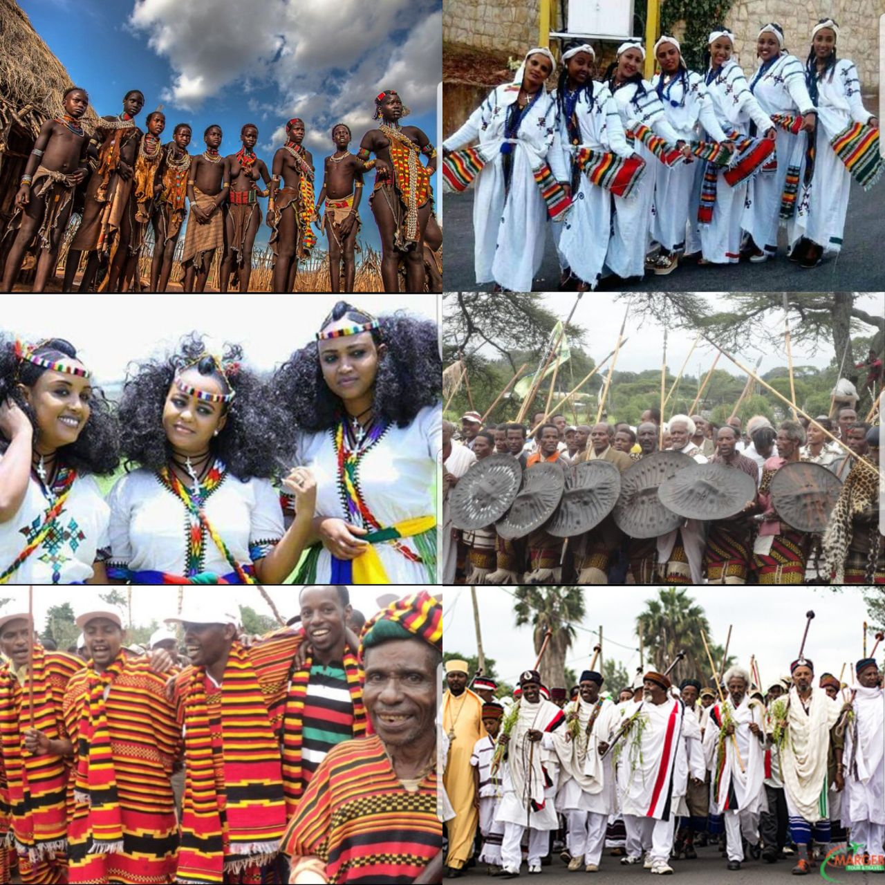
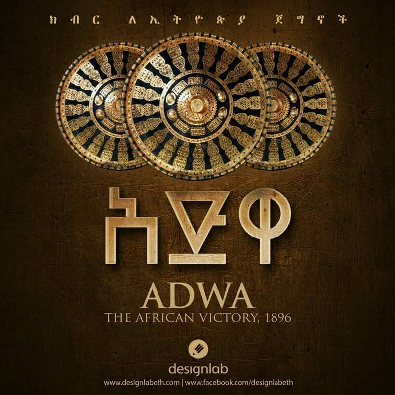
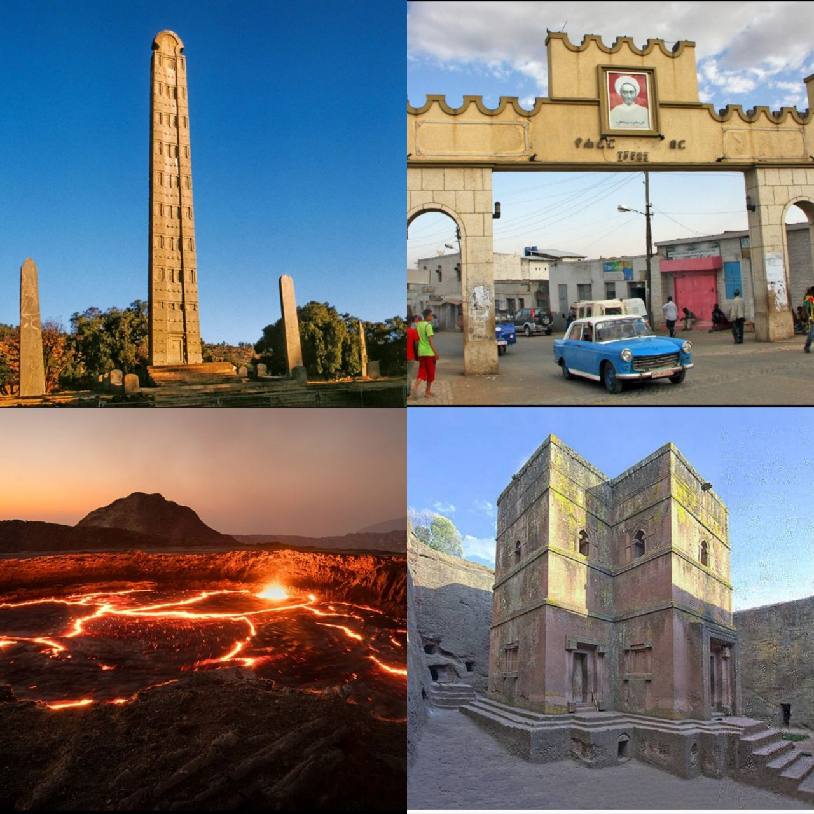

Ethiopia
My nationality is Ethiopian and being Ethiopian is truly amazing chance.I am one of ethiopian citizen that have a big respect for his country.I have a big dream to change my country with my Knowledge affter I graduate.
Culture
Ethiopia recognized for its broad cultural and diversity.There are more than 80 nation nationalities in Ethiopia.Despite,the polititians struggle to separate Ethiopians culture of tolerance with diversity till now we are one
As most of Ethiopians I have a big respect to every nation in my country.I wish to learn and vist every Culture of my country
Adwa
By the end of the 19th century, European powers had carved up almost all of Africa after the Berlin Conference. Only Ethiopia—then still commonly known as Abyssinia—and the Republic of Liberia still maintained their independence (Liberia being a settler nation supported by the United States).
The Battle of Adwa (also called Adowa and Adua) was fought over two days (1st / 2nd March) between Ethiopian forces under Emperor Menelik II and invading Italian forces, and was the deciding battle in the First Italo-Ethiopian war and a turning point in modern African history with a European Colonial power being defeated and Ethiopia being recognised as a sovereign nation state by the European powers.
Places to visit
Ethiopia, in the Horn of Africa, is a rugged, landlocked country split by the Great Rift Valley. With archaeological finds dating back more than 3 million years, it’s a place of ancient culture. Among its important sites are Lalibela with its rock-cut Christian churches from the 12th–13th centuries. Aksum is the ruins of an ancient city with obelisks, tombs, castles and Our Lady Mary of Zion church.
Ethiopia has nine UNESCO World Heritage Sites. No African country has more United Nations Educational, Scientific and Cultural Organization (UNESCO) sites than Ethiopia. UNESCO recognizes and protects sites of globally significant, cultural or natural heritage value. In Ethiopia, 8 are cultural,one is natural - the Simien Mountains National Park,three intangible heritages
If I am tired, I chose some calm, relaxing songs. Music can speak, through music people can express feelings and emotions. When you hear something that looks like you, that you understand it easily, you start to love it. There are several different ways to enjoy music as your hobby.
| connect with me | |||
|
|||
| follow me on facebook | |||